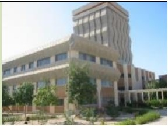

<OL start=3 type=’1’>
	<LI> UFR SAT 
	<OL type='a'  style="background-color:green;">
		<LI> Section Maths </LI>
		<LI> Section Info </LI>
		<LI> Secion Physique </LI>
	</OL>
 	</LI>
<LI> UFR SEG </LI>
<LI>UFR SJP </LI>
<LI> UFR LSH </LI>
</OL>


Exercice 3

<div style="background-color:yellow; width:500px;text-align:center;float:center;border-width:10px; border-color:red;">
Mot de bienvenue
	<p style="background-color:black; color:white;text-align:center;"> L’université vous souhaite la bienvenue</p>
</div>

Exercice 4


display: block; transforme l’image en élément de bloc.

margin: auto; la centre horizontalement.


Exercice 5
<!-- 1. a2+2ab+b2= (a+b)2 
2. S1 + S2 + S3 = 0 
3. UNIVERSITE DE SAINT-LOUIS -->

<OL type="1">
	<LI> a<SUP>2</SUP> + 2ab + b<SUP>2</SUP> = (a+b)<SUP>2</SUP>
	<LI> S<SUB>1</SUB> + S<SUB>2</SUB> + S<SUB>3</SUB> = 0
	<LI> <S>UNVERSITE DE SAINT-LOUIS </S>
</OL>

EXERCICE 6 : LES TABLEAUX
<!--Donner le code html permettant de réaliser le tableau suivant.-->

<TABLE>

<TR STYLE="background-color:green;"> <TD>UGB</TD><TD align=center></TD><TD><OL type=1><LI>UFR SAT</LI><LI>UFR SEG</LI><LI>UFR LSH</LI></OL></TD><TD><a href="http://www.ugb.sn">www.ugb.sn</a></TD></TR>

<TR STYLE="background-color:yellow;"> <TD>UCAD</TD><TD align=center></TD><TD><OL type=1><LI>FAC SCIENCE</LI><LI>FAC LETTRES</LI><LI>FAC MEDECINE</LI></OL></TD><TD><a href="http://www.ucad.sn">www.ucad.sn</a></TD></TR>

<TR STYLE="background-color:red;"> <TD>UADB</TD><TD align=center></TD><TD><OL type=1><LI>UFR SET</LI><LI>UFR SANTE</LI><LI>UFR AGRO</LI></OL></TD><TD><a href="http://www.uadb.sn">www.uadb.sn</a></TD></TR>

</TABLE>


